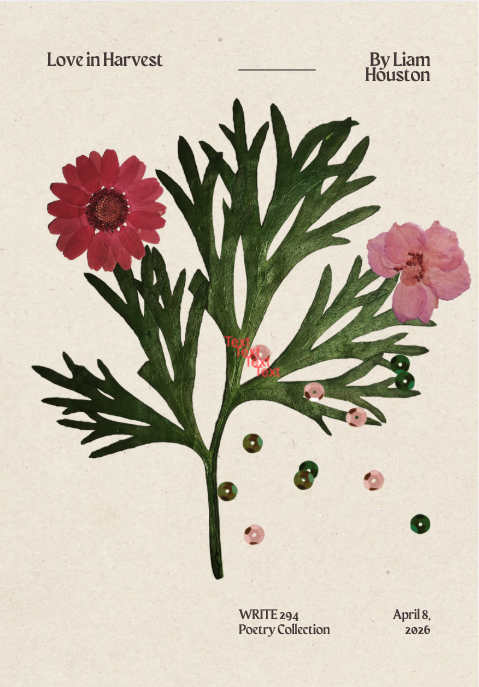

Poetry Portfolio
Love in Harvest Collection
A small collection of poems about masculinity, love and loss. These poems were written for a Creative Writing class at the University of Alberta in 2026. I'm proud to share this side of myself with you and hope it's the first of many projects to come!
